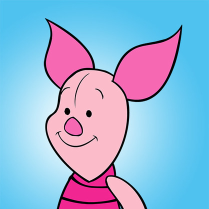

Медвежонок Винни
Винни — наивный и добродушный плюшевый мишка. Он забывчив, и его пугают длинные слова, но когда дело касается друзей, Винни всегда готов прийти на помощь!

Хрюня заикается от волнения, переживает по самым разным поводам, боится темноты, неизвестности и многих других вещей, но в его маленькой груди бьётся огромное доброе сердце.
Очаровательный Ушастик всегда грустит — по поводу и без. Он ничего ни от кого не ждет, поэтому, когда друзья помогают ему в очередной раз отыскать хвост, он искренне счастлив.
В Большом лесу Кролик считает себя лидером. Он часто сердится (особенно на Тигрулю), но все друзья знают, что у него доброе сердце.
Пружинистый хвост и бьющая через край энергия — эти черты делают Тигрулю уникальным. И он всегда готов делиться переполняющей его радостью с друзьями, хотят они этого или нет.
Филин — самый мудрый обитатель Большого леса. Он умеет читать и писать, но его советы не всегда оказываются правильными, из-за чего его друзья попадают в разные переделки.
Кристофер Робин — лучший друг медвежонка Винни. Он дружит со всеми обитателями Большого леса и всегда готов им помочь.
Заботливая мама Кенга очень гордится тем, что ее Малыш Ру гораздо умнее своих лет. А еще она души не чает в Винни и всех его друзьях.
Юный искатель приключений, Малыш Ру хочет везде побывать и все попробовать, а его мама следит за тем, чтобы он всегда был в тепле и безопасности.